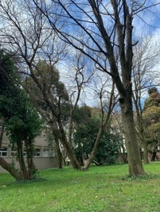
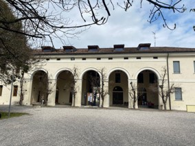
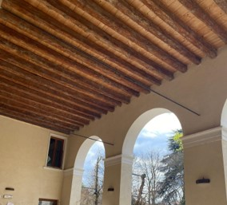

Collocata in posizione felice, di fronte a Villa Querini, da cui la separa il Muson Vecchio, Villa Campello, di probabile origine secentesca, ha struttura imponente caratterizzata all’esterno da un avancorpo in nitido stile neoclassico, risalente ai primi dell’Ottocento sul quale si inseriscono, quale motivo decorativo, i balaustri in ghisa delle finestre e dei balconi. Altro elemento di rilievo è la barchessa, fatta costruire verso la seconda metà del XIX secolo, che, oltre ad una funzione estetica di derivazione palladiana, possiede un'evidente utilità collegata alla produzione agricola. La disposizione degli spazi all’interno è quella classica delle case padronali: un ampio salone centrale di ricevimento con le stanze disposte ai lati. Degni di nota i pavimenti in mosaico e uno stemma di famiglia. Abitata a lungo dalla famiglia Mogno, acquistata poi dalla contessa Maria Campello, la villa, oggi di proprietà del Comune, è sede della Biblioteca civica e della Casa delle Associazioni ed è il cuore della vita culturale cittadina. Il giardino romantico, recentemente restaurato, ne consente un piacevole utilizzo anche nella bella stagione.
Perfectly located opposite Villa Querini, and separated from it by the Muson Vecchio, Villa Campello, likely dating back to the seventeenth century, has an imposing structure characterised externally by a projecting section in neat Neoclassical style, added in the early nineteenth century. Cast-iron balustrades on the windows and balconies are incorporated into this section as decorative elements. Another prominent feature is the barchessa (a type of rustic annex common in Venetian villas), built towards the second half of the 19th century, which, in addition to its aesthetic function derived from Palladian architecture, served a clear purpose relating to agricultural production. The internal space arrangement is the classic layout of a manor house: a large central reception hall with rooms arranged on the sides. The mosaic floors and a family crest are worthy of note. The villa was long inhabited by the Mogno family, then purchased by Countess Maria Campello. Today, the villa is owned by the Municipality and is home to the town library and headquarters of local associations (Casa delle Associazioni), making it the heart of the town’s cultural life. Its recently-restored romantic garden is a pleasant place to spend time in the warmer months.


